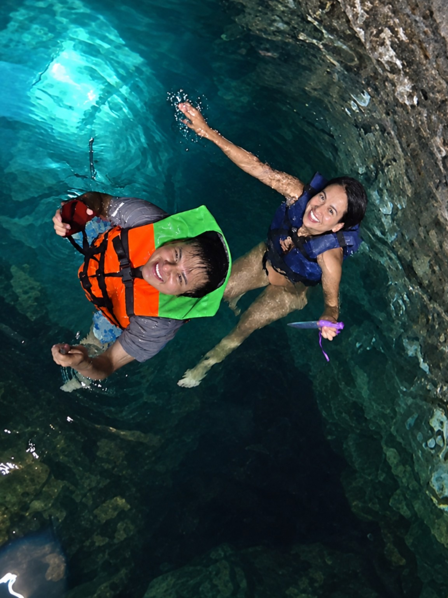

Elegirte
En los días extraordinarios y también en los que parezcan pequeños.
Una historia que apenas comienza
Una semana desde el beso que cambió la forma en la que pienso en nosotros.
Descubre lo que siento↓MÉRIDA · NUESTRO PRIMER CENOTE
El instante
17 de septiembre · 11:51 a. m.
No fue solamente nuestro primer cenote. Fue el lugar donde el tiempo pareció detenerse, donde tu sonrisa se volvió mi paisaje favorito y donde nuestro primer beso convirtió un día hermoso en un recuerdo imposible de olvidar.

“Viajé hasta Mérida para verte
y terminé encontrando un lugar
al que siempre quiero volver:
tú.”
Cada segundo me acerca a volver a verte
Y todavía siento la misma emoción cuando pienso en ti.
Lo que siento
Te amo con toda mi ser: con la emoción de volver a verte, con la curiosidad de descubrir cada parte de ti y con unas ganas inmensas de construir recuerdos que todavía no existen.
Me atrae tu mente, tu energía, tu sonrisa y esa forma tuya de ocupar todos mis pensamientos sin pedir permiso.
Me encantas completa.
Si la vida me deja elegir
En los días extraordinarios y también en los que parezcan pequeños.
Seguir viajando hasta ti, aunque el destino solamente sea tu abrazo.
Tus sueños, tus miedos, tus silencios y cada nueva versión de ti.
Con un amor sincero, presente y tan intenso como lo que despiertas en mí.
Ha pasado apenas una semana desde nuestro primer beso y nuestro primer cenote, pero algo dentro de mí siente que ese día abrió una historia que quiero vivir completa.
Te amo. Amo la intensidad con la que te pienso, la ilusión que me provoca verte y la paz que encuentro cuando estás cerca. No quiero que seas únicamente un recuerdo hermoso: te quiero en mi presente y, si tú también lo eliges, en todo lo que venga después.
No te prometo que todo será perfecto. Te prometo algo más verdadero: estar, aprenderte, cuidarte y elegirte con intención.
Mi deseo
Te volvería a elegir en ese cenote,
en Mérida y en cada vida.